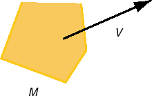
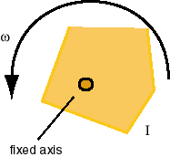
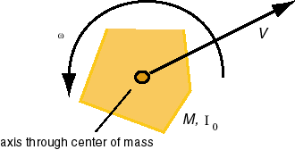

3. The expressions for the kinetic energy of a rigid body can be derived from Definition 2 of the kinetic energy of a system of particles above, by thinking of the rigid body as a collection of particles moving in unison.
One must distinguish between pure translational motion, in which all parts of the rigid body at any given instant have the same velocity and the body is not rotating, and pure rotational motion, in which the body is rotating around some fixed axis. There can also be a combination of these two types of motion. The most general kind of rotational motion in which the body is wobbling, i.e., in which the rotation axis changes orientation, will not be considered here.
(a) Pure translational motion of a rigid body.

If the body has speed V (in this case all parts of the body will have the same speed V) and mass M, the kinetic energy of the rigid body is given byK = (M/2) V2.
(b) Pure rotational motion of a rigid body.

If the body is rotating around a fixed axis with angular speed w and has a moment of inertia about that axis equal to I, its kinetic energy K is given byK = (I/2) w2.
(c) Combined rotational and translational motion of a rigid body.

The most general motion of a rigid body that is not 'wobbling' includes both translational motion and rotational motion about an axis of fixed orientation. Any such motion can be thought of as a translation of the center of mass of the body and a rotation around an axis through the center of mass.If, at a given instant, the center of mass moves with speed V and the body rotates about the center of mass with angular velocity w, and the body's mass is M and its moment of inertia about the rotation axis through the center of mass equal to I, the body's total kinetic energy is the sum of the translational kinetic energy of the center of mass and the body's rotational kinetic energy around the center of mass,
K = (M/2) V2 + (I/2) w2.
Comment. The center of mass is the only point fixed relative to the body allowing a general decomposition of the kinetic energy into translational and rotational parts as in the preceding expression.
Go to Page 3 for a generalization of this last expression to the case of a system of particles of changing shape.